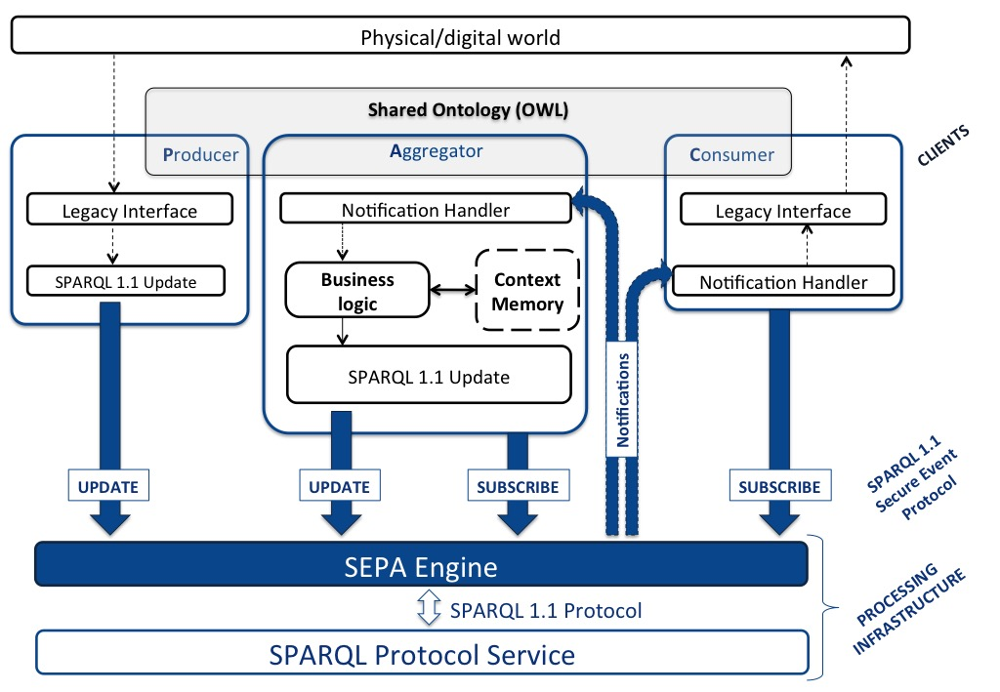

The JSON SPARQL Application Profile (JSAP) is a JSON document describing a SEPA application.
This document first presents the concept of semantic application profile from a developer point a view. Developers are RECOMMENDED to follow the presented application design pattern (i.e., an application is composed by a set of producers, consumers and aggregators). The role of a JSAP file is to collect the SPARQL updates, SPARQL queries and the connection parameters used by the application to interact with a SEPA engine instance. A JSAP file MAY contain a list of prefixes for SPARQL updates/queries. In such a way, a JSAP file acts as identity card of a SEPA application.
A JSAP file MUST be a JSON document compliant with RFC 7159 [[!RFC7159]] and SHOULD NOT be modified at runtime, as it describes the application scope. The need of runtime modifications of the JSAP file is to be considered as a bad practice.
SPARQL Event Processing Architecture
JSAPJSON SPARQL Application Profile
SPARQLSPARQL Protocol and RDF Query Language
SEPA enginea server component implementing the SEPA publish-subscribe mechanism
SEPA applicationa collection of producers, consumers and aggregators
The following figure gives an overview of the RECOMMENDED application design pattern to be followed by SEPA applications developers.
Fig. 1 - The SEPA application design pattern also know as "PAC-Pattern" (Producer-Aggregator-Consumer)
The design pattern assumes that a client SHOULD interact with a SEPA engine using two primitives: update and subscribe. The protocol used by a client to interact with a SEPA engine is presented in [[sparql11-se-protocol]]. While an update corresponds to a SPARQL 1.1 Update [[sparql11-update]], a subscribe is defined in [[sparql11-subscription]]. A subscribe acts as a persistent SPARQL 1.1 Query [[sparql11-query]] and the content of a notification contains the delta of the results since the previous notification (i.e., when a subscribe is invoked the current query results are returned to the client) as described in [[sparql11-subscription]].
A client can assume a different role depending on how it interacts with a SEPA engine.
A producer invokes a SPARQL 1.1 Update [[sparql11-update]] and such update MUST be always the same (i.e., some literals or URIs may change, but the query graph pattern MUST be the same; see forced bindings and their role within the pattern). A sensor producing some measures is an example.
A consumer invokes a SPARQL 1.1 Subscribe [[sparql11-subscription]]. Like the update of a producer, a consumer MUST invoke one and only one subscribe. When a consumer subscribes, it MAY replace some variables within the SPARQL 1.1 Query with actual values (e.g., variables MAY be replaced with literals or URIs; see forced bindings and their role within the pattern). An actuator subscribed to events (or commands) is an example.
An aggregator acts as follows: when it receives a notification, it processes the notification content and it invokes an update (if required). The processing of an aggregator can be combinatorial or sequential. In the former case there is no need of an internal context memory. To be classified as aggregator, a relation between the notification and the relative update SHOULD exist (i.e., an aggregator is not the sum of a producer and a consumer). In the PAC pattern, aggregators implement the application business logic.
The PAC pattern MAY be attractive for Web of Things applications: producers and consumers interact with the physical world and SHOULD be kept as simpler as possible. Aggregators MAY be more resources greedy (e.g., MAY run on a high performance server machine). This distinction is also very important for reusing and modularization: the same set of producers and consumers can be used in other applications just adding or extending existing aggregators.
A semantic application profile, in order to fully describe an
application, MUST contain the connection parameters needed by
an application to interact with a SEPA engine instance. Within a
JSAP, such parameters are described by a mandatory a JSON object
named
"parameters"
.
The
"parameters"
member of a JSAP MUST contain all the following default keys:
"parameters": {
"host": "wot.arces.unibo.it",
"path": "/sparql",
"scheme": "http",
"port": 8000
}
where:
"host": is the host where the SEPA engine is
running (e.g., wot.arces.unibo.it)"port": is the default port where the
SEPA engine is listening for SPARQL 1.1 primitives (e.g., 8000)"path": is the default path where the
SEPA engine is listening for SPARQL 1.1 primitives (e.g., /sparql)"scheme": is the default scheme used by
the SEPA engine (e.g., http)
The
"parameters"
member MUST also include all the parameters for the interaction with
the SPARQL 1.1 SE Protocol [[sparql11-se-protocol]] primitives, like
the HTTPS interface (used by secure SPARQL updates and SPARQL
queries) and the Websocket interface (needed by (secure) SPARQL
subscriptions). Access to these primitives require the definition of
the following keys:
"subscribe"
,
"secureUpdate"
,
"secureQuery"
and
"secureSubscribe"
.
Each of these keys MAY used to override the value of one or more of
the defaults specified by
"scheme"
,
"port"
and
"path"
as shown in the following example:
"parameters":{
"subscribe": {"scheme": "ws","port": 9000},
"secureQuery": {"port": 8443,"scheme": "https"},
"secureUpdate": {"port": 8443,"scheme": "https"},
"secureSubscribe": {"scheme": "wss","port": 9443,"path": "/secure/sparql"}
}
As a general rule, the definition of a specific key (e.g., path) can
be overwritten by a subsequent one (e.g., in a nested member). For
example, the default
"path"
key (e.g, /sparql) MAY be different from the one used by secure
subscriptions (e.g., /secure/sparql).
A SEPA engine implementation MUST provide two security related
primitives: register and request token. The former can
be used by clients to obtain credentials, while the latter to request
JSON Web Tokens needed to invoke secure primitives. JSAP allows to
specify the parameters needed to access such primitives by defining
an
authorizationServer
member as follows:
"parameters":{
"authorizationServer": {
"port": 8443,
"scheme": "https",
"register": "/oauth/register",
"requestToken": "/oauth/token"}
}
JSAP MAY also be used by clients to store credentials (i.e., client_id and client_secret) and JSON Web Token. It is RECOMMENDED to encrypt those elements.
"parameters":{
"security":{
"client_id":"TP6...RPC9",
"client_secret":"SVEM...+EPFU",
"jwt":"XABTQ...HVMWXCCK=",
"expires":"DSBUAXCGHRFQ2GGALQDUSQ==",
"type":"XPRHEX2XHY+5IUXHPHIGMW=="
}
}
JSAP MAY include a set of namespaces used by SPARQL updates and queries. Client-side APIs will take
the namespaces and prepend them to a SPARQL
update/query. Namespaces are specified as
a JSON object assigned to the key
"namespaces"
. In this object every key represents a prefix, while the value is
the relative namespace.
In the following example the well known
rdf
and
rdfs
prefixes are defined in the SAP file:
"namespaces" : {
"rdf":"http://www.w3.org/1999/02/22-rdf-syntax-ns#",
"rdfs":"http://www.w3.org/2000/01/rdf-schema#"
}
JSAP includes the list of the SPARQL updates
[[sparql11-update]] performed by the application. The updates MUST
be specified as a JSON object passed to the
"updates"
key. In this object every key represent the friendly name of the
SPARQL update. The value is a JSON object in which the main key is
named
"sparql"
and contains the SPARQL code.
The following example shows the definition of a very basic SPARQL
update named
INSERT_PERSON
:
"updates" : {
"INSERT_PERSON" : { "sparql":"INSERT DATA { <http://ns#Person1> rdf:type foaf:Person }" }
}
In a SPARQL update containing literals, quotes MUST be escaped.
The usefulness of a SAP profile consists in the ability to create
templates for SPARQL updates that can be fetched by the application
and modified at run-time to fit the actual need. For example a
producer that updates the value of a temperature sensor will only
need to fill a field in the template. Here is where the definition
of forced bindings comes in help. A forced binding enables the
developer to substitute a variable in a template with a custom
value. To define forced bindings for a SPARQL update, the key
"forcedBindings"
MUST be used. The value is a JSON object. The variable of a forced
binding is a key in that JSON object. Its value is again a JSON
object containing the keys
"type"
and
"value"
.
"type"
MUST be one of
"uri"
,
"bnode"
,
"literal"
.
Now that forced bindings have been defined, we can write an example of SPARQL update template. In the following example
"ADD_PERSON":{
"sparql":"INSERT DATA { ?person rdf:type iot:Person . ?person iot:hasName ?name }",
"forcedBindings": {
"person" : {"type":"uri", "value":""},
"name" : {"type":"literal", "value":""}
}
}
Queries and persistent queries, named subscriptions, MUST be defined
in accord to SPARQL Query Language [[rdf-sparql-query]]. While a
SPARQL query MUST be sent over HTTP (or HTTPS), a SPARQL subscription
MUST be issued over Websocket (secure or unsecure). Both queries and
subscriptio-ns are defined using the
"subscribes"
key of the main JSON object. As for SPARQL updates, each
query/subscription has a friendly name, which is a key in the JSON
object assigned to the key
"subscribes"
. The JSON object describing a query/subscription MUST contain the
"sparql"
key.
In the following example a very simple
"subscribe"
section is presented. Only a SPARQL query/subscription related to the
whole knowledge-base is present. No forced bindings are defined.
"subscribes" : {
"EVERYTHING" : {
"sparql" : "SELECT ?s ?p ?o WHERE { ?s ?p ?o }"
}
}
The JSON object of a SPARQL query/subscription MAY contain the keys
"forcedBindings"
. In that case the value of
"forcedBindings"
is a JSON object that MUST contain the keys
"type"
and
"value"
. The following example shows a template for a SPARQL
query/subscription containing forced bindings.
"subscribes" : {
"tempSensor" : {
"sparql" : "SELECT ?temp WHERE { ?tempSens rdf:type iot:TempSensor . ?tempSens iot:hasValue ?temp }",
"forcedBindings" : {
"temp": {"type":"uri", "value":""}
}
}
}
{
"parameters":{
"ports":{"ws":9000,"wss":9443,"http":8000,"https":8443},
"paths":{"http":"/sparql","https":"/sparql","ws":"/sparql","wss":"/secure/sparql","register":"/oauth/register","token":"/oauth/token"},
"host": "wot.arces.unibo.it"
},
"namespaces" : { "iot":"http://www.arces.unibo.it/iot#",
"rdf":"http://www.w3.org/1999/02/22-rdf-syntax-ns#"},
"updates": {
"ADD_PERSON":{
"sparql":"INSERT DATA { ?person rdf:type iot:Person . ?person iot:hasName ?name }",
"forcedBindings": {
"person" : {"type":"uri", "value":""},
"name" : {"type":"literal", "value":""}}}
},
"subscribes": {
"CLASS_INSTANCES":{
"sparql":"SELECT ?s WHERE { ?s rdf:type ?class }",
"forcedBindings": {
"class" : {"type":"uri", "value":""}}},
"EVERYTHING":{
"sparql":"SELECT ?s ?p ?o WHERE { ?s ?p ?o }"}
}
}
Authors would like to thanks the Advanced Research Center on Electronic Systems (ARCES) of the University of Bologna.